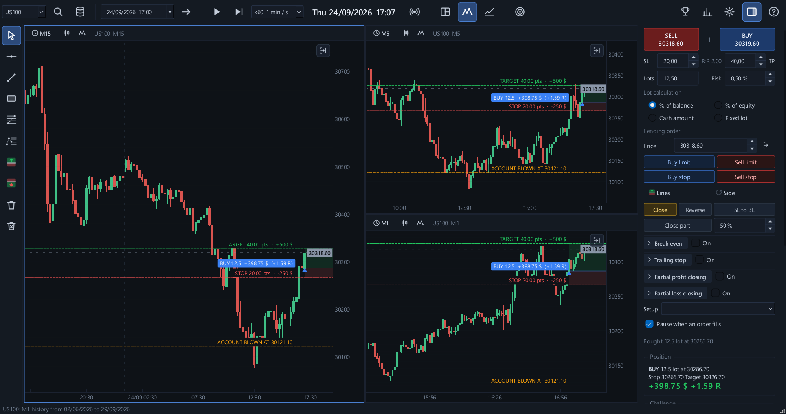
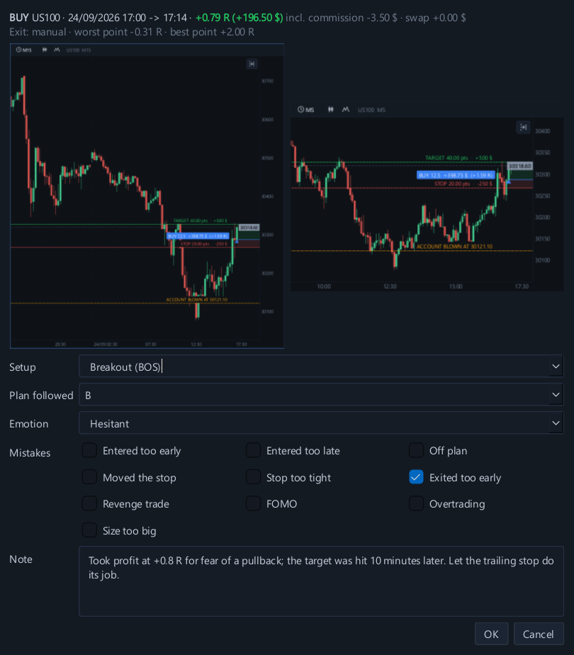
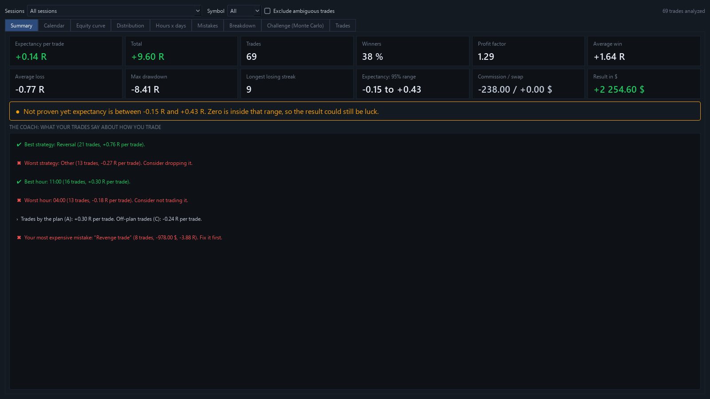
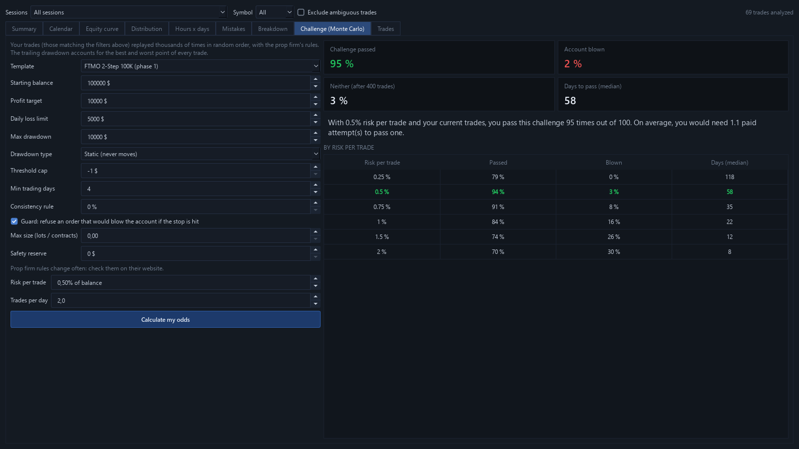
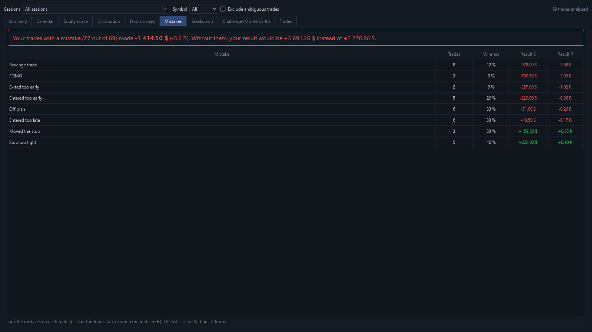
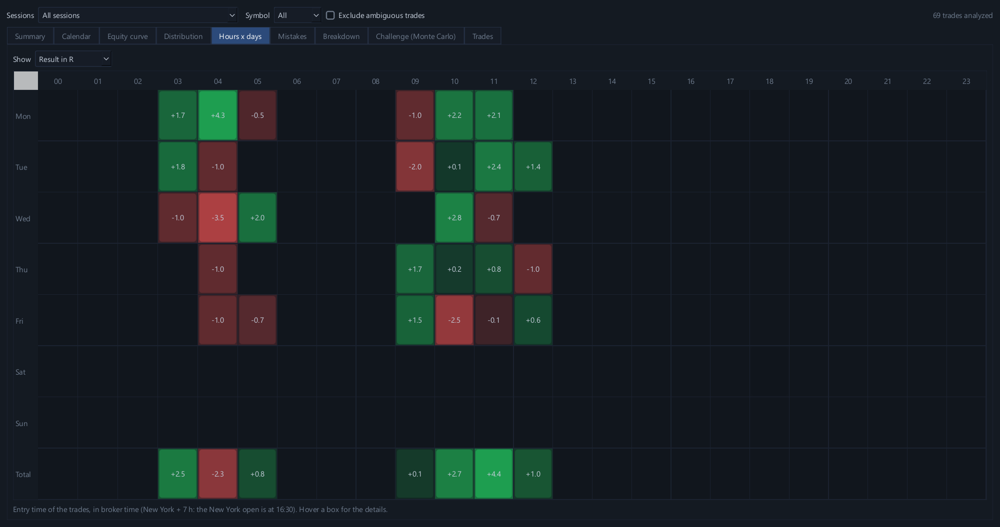

Replay, diario, coach, Monte Carlo. Todo en uno.
Ya no necesitas una plataforma de replay, un diario online y una herramienta de estadísticas: FloorDesk One lo reúne todo en un solo software. Haces replay del mercado, cada trade se registra solo, el coach te muestra tus errores y el Monte Carlo calcula tus probabilidades reales. Para traders de CFD, futuros y prop firm.

4 herramientas en 1, una sola suscripción
Lo que normalmente pagarías en varias suscripciones, reunido en un solo software. Las herramientas se comunican: tus trades del replay van directo al diario, al coach y al Monte Carlo.
1El replay
Haz replay de cualquier sesión vela por vela, en 1 a 4 gráficos, con las noticias económicas a su hora y un Trade Manager completo.

2El diario
Cada trade registrado solo, con sus capturas de entrada y de salida, tu setup, tu emoción y tus errores. Y el calendario del mes.

3El coach
Lo que tus trades dicen de ti: tu error más caro, tus mejores horas y un veredicto estadístico honesto sobre tu edge.

4El Monte Carlo
Tus trades repetidos miles de veces: tus probabilidades de pasar un challenge de prop firm y el riesgo por trade que te da más opciones.
Una plataforma de replay + un diario de trading + un coach + un simulador Monte Carlo = FloorDesk One, 17 € al mes.
Todo tu entrenamiento en un solo lugar
Replay, gestión del riesgo, noticias, diario y estadísticas: se acabó hacer malabares con cinco herramientas.
Gráficos multitemporalidad
De 1 a 4 gráficos sincronizados, de segundos a diario, Heikin Ashi, Renko, Range, gráficos de ticks.
Replay del mercado
Haz replay de cualquier sesión vela por vela, desde tiempo real hasta x3000. Ninguna vela revela el futuro.
Noticias económicas
NFP, CPI, decisiones de la Fed: cada noticia a su hora en el gráfico, desde 2010.
Trade Manager
Lote calculado según tu riesgo, break even, stop dinámico, salidas parciales, órdenes limit y stop, comisión y swap.
Diario y calendario
Cada trade con sus capturas, su setup, tu emoción y tus errores. El mes de un vistazo.
Costo de tus errores
Entrada demasiado pronto, stop movido, trade de venganza: FloorDesk One calcula cuánto te costó cada error.
Análisis honesto
Esperanza matemática, veredicto estadístico, horas y días ganadores, coach: un edge se demuestra, no se siente.
Challenge de prop firm
Apex, Topstep, FTMO o tus propias reglas, aplicadas en cada movimiento del precio, y tus probabilidades de pasar.
Más de 110 símbolos
Forex, índices, metales, energía, cripto: histórico de 1 minuto descargado gratis, o tu propio histórico.
Las noticias económicas, como en el mercado real
El mercado no se mueve al azar: un banco central, el empleo o la inflación pueden darle la vuelta a todo. FloorDesk One marca cada noticia roja de las 8 grandes divisas a su hora exacta, durante tu replay.
- USD, EUR, GBP, JPY, CHF, CAD, AUD, NZD: bancos centrales, inflación, empleo, PIB, ventas minoristas
- Solo las noticias rojas (alto impacto): fechas oficiales desde 2010, y las próximas
- La cuenta regresiva de la próxima noticia en el panel de trading
- La regla «no operar alrededor de las noticias» de muchas prop firms, aplicada automáticamente
- Tus propias noticias además, si quieres
El diario que te dice la verdad
Cada trade se registra solo: capturas en la entrada y en la salida, peor y mejor momento, comisión y swap. Tú agregas tu setup, tu emoción y tus errores en dos clics.
Tu mes de un vistazo
El calendario muestra lo que dejó cada día, el número de trades, el porcentaje de acierto y el total de la semana. Las malas rachas saltan a la vista.
- Resultados con costos incluidos, en dólares y en R
- Filtros por sesión, símbolo, challenge
- Exportación a Excel de todos tus trades
Cada trade, al detalle
La ficha de un trade reúne sus dos capturas, su resultado, su peor y su mejor momento. Marca tus errores, anota lo que deberías haber hecho y vuelve a verlo en los gráficos con un clic.
- Setup, cumplimiento del plan (A / B / C), emoción
- Errores para marcar: entrada demasiado pronto, stop movido, salida demasiado pronto… lista configurable
- «Ver en los gráficos» te lleva de vuelta al momento del trade


Un veredicto que no te miente
Con 20 trades, cualquiera puede mostrar un buen resultado. FloorDesk One calcula el rango de tu esperanza matemática y solo habla de edge si está demostrado estadísticamente.
- Resultados por setup, hora, día, dirección, emoción
- El coach: lo que tus trades dicen de tu forma de operar, y tu error más caro
- Trades ambiguos señalados: el replay nunca es más amable que el mercado
Capturas hechas con trades de demostración, no con resultados reales.
Prop firm: las reglas reales, y tus probabilidades reales
Elige Apex, Topstep, FTMO o configura tu propio challenge: FloorDesk One aplica cada regla en cada movimiento del precio, flotante incluido. Luego el Monte Carlo vuelve a jugar tus trades miles de veces.
- Drawdown estático, dinámico o de fin de día, pérdida máxima diaria, consistencia
- El precio exacto que quemaría tu cuenta, marcado en el gráfico
- Tu porcentaje de éxito, y el riesgo por trade que te da más probabilidades
- Sabes cuántos intentos pagados prever antes de gastar 1 €
Todos los mercados, ordenados y a un clic
Más de 110 símbolos clasificados por categoría, con una búsqueda que entiende «oro», «nasdaq» o «bitcoin». Doble clic: el histórico de 1 minuto se descarga gratis.
- Forex mayores, cruces y exóticos, índices, metales, energía, cripto
- El histórico de tu bróker se lee automáticamente, un solo nombre por instrumento
- Futuros y datos tick como opción
El Desafío de la semana
Cada lunes, un nuevo momento de mercado, el mismo para todos y con los mismos datos: una apertura de Nueva York, un crash famoso, un CPI explosivo… La fecha queda oculta hasta el final.
- Incluido en la suscripción, y para probar durante los 7 días gratis
- Una tarjeta de resultado para compartir (Instagram, TikTok, X, Discord): «supera mi puntaje»
- Los días legendarios: crash del Covid, BNS 2015, noche del Brexit, CPI de noviembre de 2022…
- Y para entrenar: 20 repeticiones de la apertura de Nueva York en una noche, a ciegas
Un solo software, por 17 € al mes
Replay, gestión de trades, noticias, diario y prop firm en un solo software.
| Herramienta de replay clásica | Diario de trading en línea | FloorDesk One | |
|---|---|---|---|
| Replay multigráfico sincronizado | ✓ | — | ✓ |
| Noticias económicas en el gráfico durante el replay | — | — | ✓ |
| Trade Manager: lote según el riesgo, break even, salidas parciales | — | — | ✓ |
| Diario con calendario y costo de los errores | — | ✓ | ✓ |
| Reglas de prop firm aplicadas en cada movimiento del precio | — | — | ✓ |
| Probabilidad de pasar tu challenge (Monte Carlo) | — | — | ✓ |
| Veredicto estadístico y coach | — | — | ✓ |
Un precio simple
Empieza con 7 días gratis, sin tarjeta. Todas las funciones están incluidas en cada plan.
Mensual
- Todas las funciones
- Actualizaciones incluidas
- 1 PC por licencia
Anual
- Todas las funciones
- Actualizaciones incluidas
- 1 PC por licencia
Precios con IVA incluido. Pago seguro con Lemon Squeezy, nuestro revendedor oficial, que gestiona el IVA. Pruébalo gratis 7 días antes de comprar. Condiciones de venta
Preguntas frecuentes
¿Puedo operar mi cuenta real con FloorDesk One?
No. FloorDesk One es un software de entrenamiento: vuelves a jugar el pasado con una cuenta simulada, sin dinero real. Sigues usando tu plataforma habitual para tu cuenta real.
¿De dónde vienen las noticias económicas?
De los calendarios oficiales de cada país: bancos centrales (Fed, BCE, Banco de Inglaterra, Banco de Japón, BNS, Banco de Canadá, RBA, RBNZ) e institutos de estadística. Las fechas van de 2010 al año que viene. Puedes agregar tus propias noticias.
¿De dónde vienen los datos de mercado?
La ventana Símbolos descarga gratis el histórico de 1 minuto de más de 110 símbolos (forex, índices, metales, energía, cripto). FloorDesk One también lee el histórico de la plataforma de tu bróker y archivos CSV y, como opción, datos tick y futuros.
¿En qué computadoras funciona?
Windows 10 y 11 (64 bits). Por ahora no hay versión para Mac.
¿Las reglas de las prop firms son exactas?
Los modelos de Apex, Topstep y FTMO siguen sus reglas principales, y todo se puede modificar. Las prop firms cambian sus condiciones con frecuencia: verifícalas siempre en su sitio web antes de un challenge real.
¿Me garantiza que voy a ganar o a pasar mi challenge?
No. FloorDesk One es un software de análisis y de entrenamiento: te muestra con honestidad lo que valen tus trades y tus probabilidades. Los resultados simulados o pasados no garantizan resultados futuros.
¿Puedo cambiar de computadora?
Una licencia funciona en 1 PC a la vez. Para cambiar de computadora, libera la licencia desde el menú ? → Licencia.
¿Necesito conexión a internet?
Para descargar el histórico, sí. El replay, el diario y el análisis funcionan sin conexión: la licencia se verifica una vez por semana, y puedes trabajar hasta 14 días sin internet.
¿Puedo cancelar mi suscripción?
Sí, en cualquier momento, con un clic desde el email de tu compra. Conservas el acceso hasta el final del período ya pagado, sin ningún otro cobro. Los 7 días de prueba gratis sirven para probarlo todo antes de comprar.
Windows muestra «Windows protegió tu PC»
Es normal con un software reciente. Haz clic en «Más información» y luego en «Ejecutar de todas formas».
¿Listo para entrenar?
7 días gratis, todas las funciones, sin tarjeta. Después, 17 € al mes.
Descargar FloorDesk One